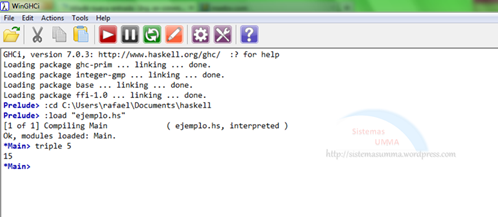

¿Qué son los lenguajes declarativos?
Se le puede decir que este tipo de lenguajes de programación son la contraparte de los lenguajes de programación imperativa ya que es un paradigma de programación que se puede basar en el desarrollo de programas ya sea especificando o aclarando una agrupación de condiciones, proposiciones, afirmaciones, restricciones, ecuaciones o transformaciones que describen el problema y detallan su solución.
La solución que se requiere se puede obtener mediante mecanismos internos de control, sin especificar exactamente cómo encontrarla (esto es demasiado fácil ya que lo que se debe de hacer es solamente darle instrucciones a la computadora de qué es lo que se desea obtener o qué es lo que se está buscando). No existen asignaciones destructivas, y las variables son utilizadas con transparencia referencial.
¿Para qué sirven?
Estos de lenguajes de programación sirven más que nada para el razonamiento lógico y para las matemáticas ya que se basan en ambas cosas (lo cual lo hace un poco mejor que los lenguajes de programación imperativa) además que se acerca más al razonamiento de las personas o del ser humano. También hay que destacar que los lenguajes de programación declarativa no dicen cómo hacer una cosa, sino, más bien, qué cosa hacer.
Ejemplos de lenguajes declarativos
Algunos ejemplos de estos tipos de lenguajes de programación son:
Ejemplo 1
Ejemplo 2
Ejemplo 3
Describir las características, cómo funcionan, ventajas, desventajas, qué son: Haskell, Erlang y Lisp
| Haskell | Erlang | Lisp | |
|---|---|---|---|
| Características | Contiene funciones de alto orden, Uso de polimorfismos de tipos, Evaluación perezosa, Soporta la sobrecarga sistemática. | Uso de parámetros, Devolver los parámetros como resultados, Construcción de procesos ligeros, Tipado dinámico. | Uso de memoria automático, Tiene un mecanismo para la evaluación perezosa de expresiones, Asocia sus tipos en diferentes valores, Su programación suele ser mediante cálculos. |
| Cómo funcionan | Tiene una amplia cantidad de funciones y aplicaciones además que crea programas que deben ser altamente modificables y fáciles de mantener. | Funciona con la ayuda de procesos concurrentes que hacen que exista una mejor estructuración de la aplicación. | Su funcionamiento es el almacenamiento de diferentes datos átomos o información de tipo numérico los cuales incluye números reales y enteros. |
| Ventajas | La productividad de los desarrolladores puede aumentar considerablemente, El código del software de Haskell es breve, claro y fácil de mantener, Las aplicaciones de Haskell son menos propensas a errores y ofrecen una gran fiabilidad, La brecha “semántica” entre el programador y el lenguaje es mínima. | Ideal para sistemas de alta disponibilidad, Concurrencia, Facilidad de uso, Soporte comunitario. | Es flexible, Maneja listas y arboles con facilidad, Razonamiento matemático, Compatibilidad con todos los sistemas operativos. |
| Desventajas | Haskell adopta por defecto la evaluación perezosa, Debido a la pureza de Haskell, no puede usar efectos secundarios para hacer cosas como E/S, La evaluación diferida también significa que no puede razonar fácilmente sobre el orden de ejecución, La sintaxis de registro no introduce un ámbito de denominación. | Depuración compleja, Contratación de desarrolladores, No es muy popular, Algunas veces es muy difícil de usar este lenguaje. | No tiene mucha velocidad al llevar a cabo el programa, Es difícil de comprender el código, No es tan intuitivo, No es muy comercial. |
| Qué son | Es aquel lenguaje de programación declarativa en el que usa como base un tipo de cálculo llamado lambda en el que se encarga de investigar diferentes funciones matemáticas (así se representa los programas hechos en este lenguaje de programación). | Es un lenguaje de programación tanto declarativo como funcional considerado de al nivel el cual fue creado específicamente para desarrollar aplicaciones concurrentes. | Es un lenguaje que muestra la información estructurada en listas en las que se pueden gestionar la información que estas contienen, fue creado principalmente para el procesamiento de listas. |
| Ejemplos de código |  |
Descripción del flujo de control de la ejecución de un programa declarativo
Para llevar a cabo lo que es un flujo de control de la ejecución de un programa hecho en un lenguaje declarativo, no es necesario realizar la definición de algoritmos ya que se describe el problema planteado en vez de crear o encontrar la solución que se necesita. El paradigma de este tipo de lenguajes de programación usa siempre lo que es el razonamiento lógico para responder a las preguntas o cuestiones consultadas.
Lo que hace tan especial este paradigma es que se divide en dos: Programación lógica y Programación funcional.